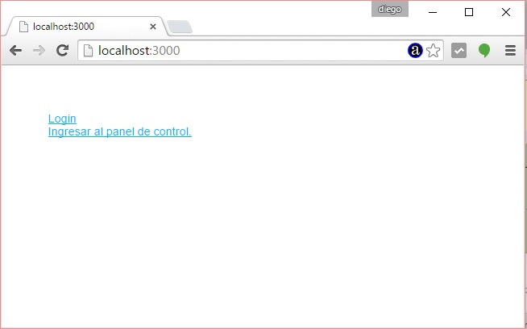
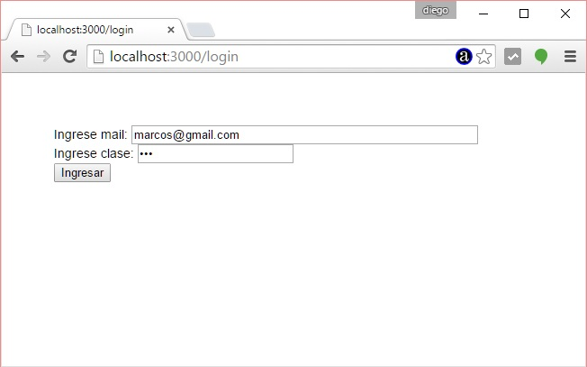
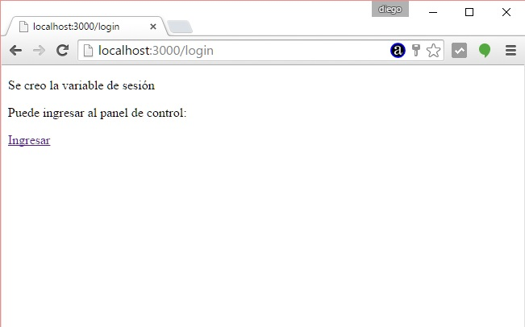
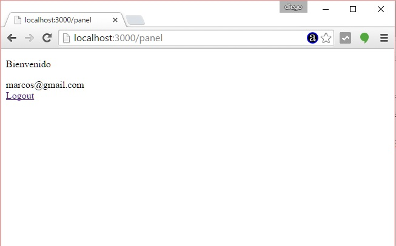
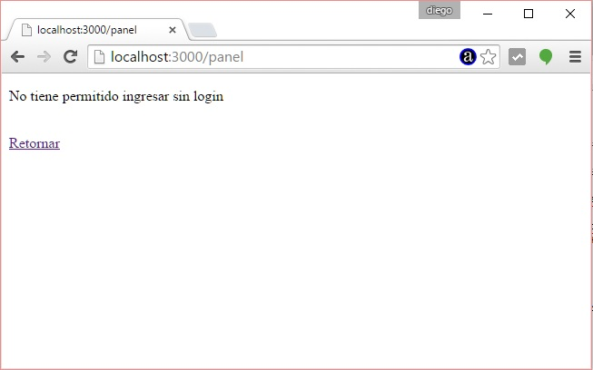

En muchas situaciones necesitamos almacenar datos que no se borren entre una y otra página que solicita un cliente. En este tipo de situaciones aparece el uso de variables de sesión.
El Framework Express no instala por defecto el módulo para administrar variables de sesión en el sitio web.
Si necesitamos hacer uso de variables de sesión en nuestro proyecto Express debemos instalar el módulo express-session.
Problema
Crear un formulario de login que permita ingresa el mail y la clave de un usuario. Crear luego al presionar el botón submit una variable de sesión que almacene el mail del usuario.
Definir una ruta '/panel' que solo se pueda acceder si se creó la variable de sesión.
Paso 1
Como vamos a utilizar el Framework Express y en conceptos anteriores ya instalamos el 'express-generator' nos posicionamos en el directorio 'c:\ejerciciosnodejs' (o el directorio donde esta almacenando todos sus proyectos) y procederemos a crear nuestra aplicación Node.js utilizando Express y su generador de código:c:\ejerciciosnodejs> express ejercicio25 --hbs
Estamos llamando al programa 'express' y le pasamos dos parámetros, el primero indica el nombre de nuestro proyecto y el segundo el sistema de plantillas que utilizaremos para generar nuestras páginas dinámicas (handlebars)
Ya tenemos creado la carpeta ejercicio25 y dentro de esta los archivos y subcarpetas básicos:
ejercicio25
app.js
package.json
bin
www
public
images
javascripts
stylesheets
router
index.js
users.js
views
error.hbs
index.hbs
layout.hbs
Descendemos a la carpeta ejercicio25 e instalamos todas las dependencias de módulos:
c:\ejerciciosnodejs\ejercicio25>npm install
Cuando llamamos a 'npm install' sin ningún otro parámetro lo que hace es buscar el archivo 'package.json' y proceder a instalar todos los módulos especificados en la propiedad 'dependencies'.
Ahora ya tenemos creado la carpeta 'node_modules' con las 7 carpetas que coinciden con las dependencias especificadas en el archivo json:
body-parser
cookie-parser
debug
express
hbs
morgan
serve-favicon
Recordemos que hasta ahora hemos creado un esqueleto funcional de una aplicación Node.js utilizando el framework Express y lo podemos ejecutar:
Podemos ejecutar nuestra aplicación mínima creada con el 'express-generador':
c:\ejerciciosnodejs\ejercicio25>node ./bin/www
Y ya podemos solicitar al servidor la página raíz del sitio:

Recordemos que otra forma de iniciar a nuestro proyecto en Node.js cuando definimos el archivo package.json:
En lugar de escribir:
c:\ejerciciosnodejs\ejercicio25>node ./bin/www
Escribimos:
c:\ejerciciosnodejs\ejercicio25>npm start
Recordemos que en el archivo json hay una propiedad start donde definimos el archivo que inicia nuestra aplicación:
"scripts": {
"start": "node ./bin/www"
},
Paso 2
Pasamos a instalar el módulo express-session desde la línea de comandos:
c:\ejerciciosnodejs\ejercicio25>npm install express-session --save
Después de esto podemos abrir el archivo package.json y ver que se agregó la nueva dependencia "express-session" por indicar --save:
{
"name": "ejercicio25",
"version": "0.0.0",
"private": true,
"scripts": {
"start": "node ./bin/www"
},
"dependencies": {
"body-parser": "~1.13.2",
"cookie-parser": "~1.3.5",
"debug": "~2.2.0",
"express": "~4.13.1",
"express-session": "^1.11.3",
"hbs": "~3.1.0",
"morgan": "~1.6.1",
"serve-favicon": "~2.3.0"
}
}
También si entramos en la carpeta node-modules veremos que se encuentra instalado el módulo "express-session".
Paso 3
Modificamos el archivo app.js, para hacer uso del módulo que instalamos debemos agregar las líneas:
var session = require('express-session');
....
app.use(session({secret: '123456', resave: true, saveUninitialized: true}));
El archivo app.js completo queda entonces:
var express = require('express');
var path = require('path');
var favicon = require('serve-favicon');
var logger = require('morgan');
var cookieParser = require('cookie-parser');
var bodyParser = require('body-parser');
var session = require('express-session');
var routes = require('./routes/index');
var users = require('./routes/users');
var app = express();
// view engine setup
app.set('views', path.join(__dirname, 'views'));
app.set('view engine', 'hbs');
// uncomment after placing your favicon in /public
//app.use(favicon(path.join(__dirname, 'public', 'favicon.ico')));
app.use(logger('dev'));
app.use(bodyParser.json());
app.use(bodyParser.urlencoded({ extended: false }));
app.use(cookieParser());
app.use(express.static(path.join(__dirname, 'public')));
app.use(session({secret: '123456', resave: true, saveUninitialized: true}));
app.use('/', routes);
app.use('/users', users);
// catch 404 and forward to error handler
app.use(function(req, res, next) {
var err = new Error('Not Found');
err.status = 404;
next(err);
});
// error handlers
// development error handler
// will print stacktrace
if (app.get('env') === 'development') {
app.use(function(err, req, res, next) {
res.status(err.status || 500);
res.render('error', {
message: err.message,
error: err
});
});
}
// production error handler
// no stacktraces leaked to user
app.use(function(err, req, res, next) {
res.status(err.status || 500);
res.render('error', {
message: err.message,
error: {}
});
});
module.exports = app;
Paso 4
Ahora tenemos que modificar el archivo index.hbs que se encuentra en la carpeta "views" y disponemos dos enlaces al formulario de login y al panel de control:
<a href="/login">Login</a> <br> <a href="/panel">Ingresar al panel de control.</a>
También creamos otra plantilla llamada 'login.hbs' y cuyo contenido es:
<form method="post" action="/login"> Ingrese mail: <input type="mail" name="mail" size="50"> <br> Ingrese clase: <input type="password" name="clave" size="20"> <br> <input type="submit" value="Ingresar"> </form>
Paso 5
En el archivo index.js de la carpeta routes disponemos el siguiente código:
var express = require('express');
var router = express.Router();
/* GET home page. */
router.get('/', function(req, res, next) {
res.render('index');
});
router.get('/login', function(req, res, next) {
res.render('login');
});
router.post('/login', function(req, res, next) {
req.session.mail=req.body.mail;
var pagina='<!doctype html><html><head></head><body>'+
'<p>Se creo la variable de sesión</p>'+
'<p>Puede ingresar al panel de control:</p>'+
'<a href="/panel">Ingresar</a><br>'+
'</body></html>';
res.send(pagina);
});
router.get('/panel', function(req, res, next) {
if (req.session.mail) {
var pagina='<!doctype html><html><head></head><body>'+
'<p>Bienvenido</p>'+
req.session.mail+
'<br><a href="/logout">Logout</a></body></html>';
res.send(pagina);
} else {
var pagina='<!doctype html><html><head></head><body>'+
'<p>No tiene permitido ingresar sin login</p>'+
'<br><a href="/">Retornar</a></body></html>';
res.send(pagina);
}
});
router.get('/logout', function(req, res, next) {
req.session.destroy();
var pagina='<!doctype html><html><head></head><body>'+
'<br><a href="/">Retornar</a></body></html>';
res.send(pagina);
});
module.exports = router;
Cuando arrancamos la aplicación nos muestra el contenido de la plantilla index.hbs:
router.get('/', function(req, res, next) {
res.render('index');
});

Al seleccionar el hipervínculo de Login tenemos que se ejecuta:
router.get('/login', function(req, res, next) {
res.render('login');
});

Cuando se presiona el botón submit pasa a ejecutarse el siguiente código donde se crea la variable de sesión:
router.post('/login', function(req, res, next) {
req.session.mail=req.body.mail;
var pagina='<!doctype html><html><head></head><body>'+
'<p>Se creo la variable de sesión</p>'+
'<p>Puede ingresar al panel de control:</p>'+
'<a href="/panel">Ingresar</a><br>'+
'</body></html>';
res.send(pagina);
});
Es decir el objeto req tiene una propiedad llamada session y le creamos a esta una propiedad mail con el valor que se rescata del formulario web.

Al presionar el hipervínculo de Ingresar se ejecuta:
router.get('/panel', function(req, res, next) {
if (req.session.mail) {
var pagina='<!doctype html><html><head></head><body>'+
'<p>Bienvenido</p>'+
req.session.mail+
'<br><a href="/logout">Logout</a></body></html>';
res.send(pagina);
} else {
var pagina='<!doctype html><html><head></head><body>'+
'<p>No tiene permitido ingresar sin login</p>'+
'<br><a href="/">Retornar</a></body></html>';
res.send(pagina);
}
});
Mediante un if controlamos que exista la variable de sesión llamada mail:
if (req.session.mail) {

Cuando seleccionamos Logout se ejecuta:
router.get('/logout', function(req, res, next) {
req.session.destroy();
var pagina='<!doctype html><html><head></head><body>'+
'<br><a href="/">Retornar</a></body></html>';
res.send(pagina);
});
Cerramos la sesión completa (si hay varias variables de sesión creada se eliminan todas)
Si intentamos ingresar al panel desde el menú de la página principal sin ingresar mail y clave tenemos como respuesta la siguiente pantalla:

Este proyecto lo puede descargar en un zip con todos los archivos desde este enlace : ejercicio25